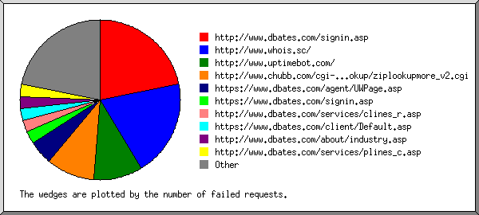
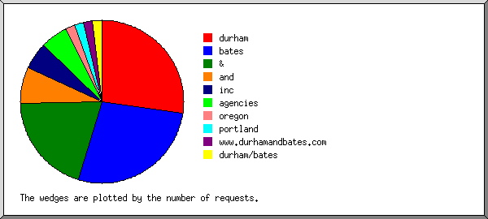
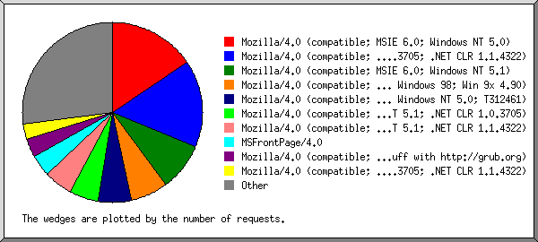
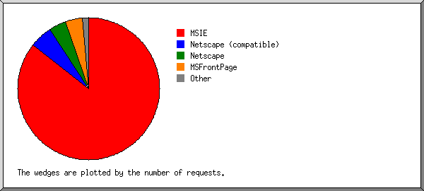
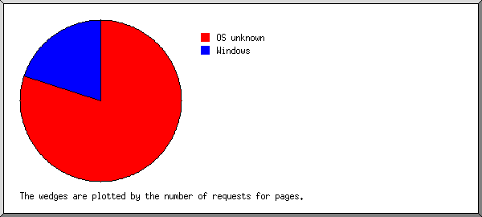
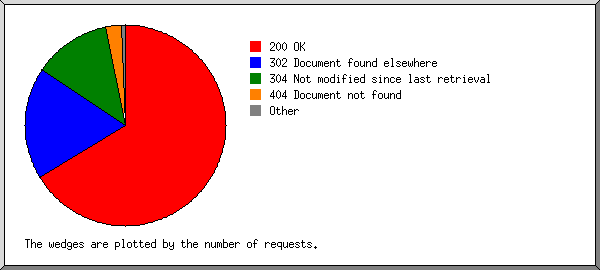
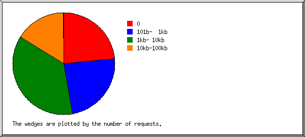
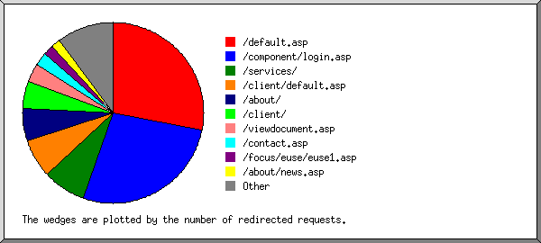
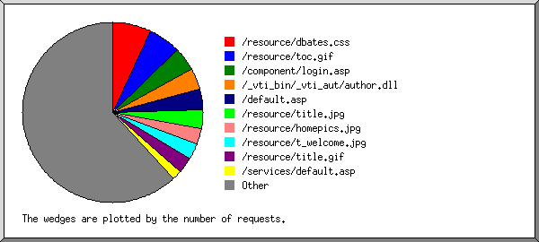

Web Server Statistics for es57045 Web Server Statistics for es57045
Web Server Statistics for es57045 Web Server Statistics for es57045(Go To: Top: General Summary: Monthly Report: Daily Summary: Hourly Summary: Failed Referrer Report: Search Word Report: Browser Report: Browser Summary: Operating System Report: Status Code Report: File Size Report: Redirection Report: Request Report)
This report contains overall statistics.
(Figures in parentheses refer to the 7-day period ending Apr 30
2004 at 11:59 PM).
Successful requests: 5,530 (1,348)
Average successful requests per day: 186 (192)
Logfile lines without status code: 93 (0)
Successful requests for pages: 10 (2)
Failed requests: 208 (52)
Redirected requests: 1,263 (256)
Distinct files requested: 193 (142)
Distinct hosts served: 415 (109)
Unwanted logfile entries: 48
Data transferred: 34.637 Mbytes (6.436 Mbytes)
Average data transferred per day: 1.170 Mbytes (941.614 kbytes)
(Go To: Top: General Summary: Monthly Report: Daily Summary: Hourly Summary: Failed Referrer Report: Search Word Report: Browser Report: Browser Summary: Operating System Report: Status Code Report: File Size Report: Redirection Report: Request Report)
This report lists the activity in each month.
Each unit ( ) represents 1 request
for a page.
) represents 1 request
for a page.
month: #reqs: #pages: --------: -----: ------: Apr 2004: 5530: 10:Busiest month: Apr 2004 (10 requests for pages).
(Go To: Top: General Summary: Monthly Report: Daily Summary: Hourly Summary: Failed Referrer Report: Search Word Report: Browser Report: Browser Summary: Operating System Report: Status Code Report: File Size Report: Redirection Report: Request Report)
This report lists the total activity for each day of the week, summed over all the weeks in the report.
Each unit () represents 1 request
for a page.
day: #reqs: #pages: ---: -----: ------: Sun: 207: 0: Mon: 1269: 4:Tue: 1106: 2:
(Go To: Top: General Summary: Monthly Report: Daily Summary: Hourly Summary: Failed Referrer Report: Search Word Report: Browser Report: Browser Summary: Operating System Report: Status Code Report: File Size Report: Redirection Report: Request Report)
This report lists the total activity for each hour of the day, summed over all the days in the report.
Each unit () represents 1 request
for a page.
hour: #reqs: #pages: ----: -----: ------: 0: 99: 0: 1: 430: 0: 2: 131: 0: 3: 29: 0: 4: 181: 0: 5: 61: 0: 6: 114: 0: 7: 51: 0: 8: 24: 0: 9: 29: 0: 10: 17: 0: 11: 130: 0: 12: 35: 0: 13: 110: 0: 14: 557: 8:15: 315: 0: 16: 682: 0: 17: 564: 0: 18: 282: 0: 19: 173: 0: 20: 295: 0: 21: 429: 0: 22: 523: 2:
(Go To: Top: General Summary: Monthly Report: Daily Summary: Hourly Summary: Failed Referrer Report: Search Word Report: Browser Report: Browser Summary: Operating System Report: Status Code Report: File Size Report: Redirection Report: Request Report)
This report lists the referrers containing broken links to the site.

Listing referring URLs, sorted by the number of failed requests.
#reqs: URL
-----: ---
9: http://www.dbates.com/signin.asp
8: http://www.whois.sc/
4: http://www.uptimebot.com/
4: http://www.chubb.com/cgi-bin/agentlookup/ziplookupmore_v2.cgi
2: https://www.dbates.com/agent/UWPage.asp
1: https://www.dbates.com/signin.asp
1: http://www.dbates.com/services/clines_r.asp
1: https://www.dbates.com/client/Default.asp
1: http://www.dbates.com/about/industry.asp
1: http://www.dbates.com/services/plines_c.asp
1: https://www.dbates.com/client/select.asp
1: http://www.dbates.com/services/clines_i.asp
1: http://www.dbates.com/about/commune.asp
1: http://www.dbates.com/services/clines_s.asp
1: http://www.dbates.com/sitemap.asp
1: http://www.dbates.com/services/clines0.asp
1: http://www.dbates.com/about/esop.asp
1: http://www.dbates.com/about/partner.asp
1: http://www.dbates.com/about/begin.asp
(Go To: Top: General Summary: Monthly Report: Daily Summary: Hourly Summary: Failed Referrer Report: Search Word Report: Browser Report: Browser Summary: Operating System Report: Status Code Report: File Size Report: Redirection Report: Request Report)
This report lists which words people used in search engines to find the site.

Listing query words, sorted by the number of requests.
#reqs: search term
-----: -----------
15: durham
15: bates
11: &
4: and
3: inc
3: agencies
1: oregon
1: portland
1: www.durhamandbates.com
1: durham/bates
(Go To: Top: General Summary: Monthly Report: Daily Summary: Hourly Summary: Failed Referrer Report: Search Word Report: Browser Report: Browser Summary: Operating System Report: Status Code Report: File Size Report: Redirection Report: Request Report)
This report lists the browsers used by visitors.

Listing the top 40 browsers by the number of requests, sorted by the number of requests.
#reqs: browser -----: ------- 866: Mozilla/4.0 (compatible; MSIE 6.0; Windows NT 5.0) 862: Mozilla/4.0 (compatible; MSIE 6.0; Windows 98; (R1 1.3); .NET CLR 1.0.3705; .NET CLR 1.1.4322) 481: Mozilla/4.0 (compatible; MSIE 6.0; Windows NT 5.1) 363: Mozilla/4.0 (compatible; MSIE 5.5; Windows 98; Win 9x 4.90) 331: Mozilla/4.0 (compatible; MSIE 6.0; Windows NT 5.0; T312461) 292: Mozilla/4.0 (compatible; MSIE 6.0; Windows NT 5.1; .NET CLR 1.0.3705) 278: Mozilla/4.0 (compatible; MSIE 6.0; Windows NT 5.1; .NET CLR 1.1.4322) 217: MSFrontPage/4.0 186: Mozilla/4.0 (compatible; grub-client-1.5.3; Crawl your own stuff with http://grub.org) 151: Mozilla/4.0 (compatible; MSIE 6.0; Windows NT 5.1; .NET CLR 1.0.3705; .NET CLR 1.1.4322) 138: Mozilla/4.0 (compatible; MSIE 6.0; Windows 98) 105: Mozilla/4.0 (compatible; MSIE 6.0; Windows NT 5.0; MSN 8.0; MSN 8.5; MSNbQ001; MSNmen-us; MSNcOTH) 102: Mozilla/4.0 (compatible; MSIE 6.0; Windows 98; sureseeker.com) 101: Mozilla/4.0 (compatible; MSIE 5.0; Windows 98; DigExt) 85: Mozilla/5.0 (Windows; U; Windows NT 5.1; en-US; rv:1.4) Gecko/20030624 Netscape/7.1 (ax) 85: Mozilla/4.0 (compatible; MSIE 5.5; Windows 98) 81: Mozilla/4.0 (compatible; MSIE 6.0; Windows NT 5.0; .NET CLR 1.1.4322) 69: Mozilla/4.0 (compatible; MSIE 5.5; Windows NT 5.0) 48: Mozilla/4.0 (compatible; MSIE 5.0; Windows 98; H010818; Creative; DigExt) 46: Mozilla/4.0 (compatible; MSIE 6.0; Windows 98; Win 9x 4.90) 44: Mozilla/4.0 (compatible; MSIE 6.0; AOL 9.0; Windows 98) 44: Mozilla/5.0 (compatible; Yahoo! Slurp; http://help.yahoo.com/help/us/ysearch/slurp) 38: Googlebot/2.1 ( http://www.googlebot.com/bot.html) 34: Mozilla/4.0 (compatible; MSIE 6.0; Windows NT 4.0) 33: Mozilla/4.0 (compatible; MSIE 6.0; AOL 8.0; Windows 98; Win 9x 4.90) 31: Mozilla/4.0 (compatible; MSIE 6.0; Windows NT 5.0; FunWebProducts) 31: Mozilla/5.0 (Macintosh; U; PPC Mac OS X; en-us) AppleWebKit/124 (KHTML, like Gecko) Safari/125.1 24: Mozilla/5.0 (Macintosh; U; PPC Mac OS X; en) AppleWebKit/124 (KHTML, like Gecko) Safari/125.1 22: Mozilla/5.0 (Windows; U; Windows NT 5.0; en-US; rv:1.5) Gecko/20031007 22: Mozilla/4.0 (compatible; MSIE 6.0; Windows NT 5.1; FunWebProducts) 22: Mozilla/5.0 (Windows; U; Win98; en-US; rv:1.4) Gecko/20030624 Netscape/7.1 (ax) 20: Mozilla/5.0 (Windows; U; Windows NT 5.0; en-US; rv:1.4) Gecko/20030624 19: Mozilla/4.0 (compatible; MSIE 6.0; Windows NT 5.0; .NET CLR 1.0.3705; .NET CLR 1.1.4322) 17: Mozilla/4.0 (compatible; MSIE 6.0; Windows NT 5.1; FunWebProducts; DVD Owner) 17: Mozilla/5.0 (X11; U; FreeBSD i386; en-US; rv:1.5) Gecko/20031109 Firebird/0.7 15: Mozilla/4.0 (compatible; grub-client-0.3.0; Crawl your own stuff with http://grub.org) 14: Mozilla/4.0 (compatible; MSIE 6.0; Windows NT 5.0; E5; .NET CLR 1.0.3705; .NET CLR 1.1.4322) 14: Mozilla/4.0 (compatible; grub-client-1.4.3; Crawl your own stuff with http://grub.org) 14: Mozilla/4.0 (compatible; MSIE 5.01; Windows NT) 13: Mozilla/4.0 (compatible; MSIE 6.0; AOL 8.0; Windows NT 5.0) 155: [not listed: 34 browsers]
(Go To: Top: General Summary: Monthly Report: Daily Summary: Hourly Summary: Failed Referrer Report: Search Word Report: Browser Report: Browser Summary: Operating System Report: Status Code Report: File Size Report: Redirection Report: Request Report)
This report lists the vendors of visitors' browsers.

Listing browsers, sorted by the number of requests.
#reqs: browser
-----: -------
4732: MSIE
4029: MSIE/6
703: MSIE/5
287: Netscape (compatible)
221: Netscape
166: Mozilla/1
217: MSFrontPage
217: MSFrontPage/4
38: Googlebot
38: Googlebot/2
6: NPBot (http:
6: NPBot (http://www
6: FAST-WebCrawler
6: FAST-WebCrawler/3
6: Netscape
6: Netscape/4
4: Microsoft Data Access Internet Publishing Provider Cache Manager
3: NaverBot-1.0 (NHN Corp.
3: NaverBot-1.0 (NHN Corp. /
2: google
2: Net Probe
1: TurnitinBot
1: TurnitinBot/2
1: MFC_Tear_Sample
1: msnbot
1: msnbot/0
1: Opera
1: Opera/6
1: http:
1: http://www
1: Gigabot
1: Gigabot/1
(Go To: Top: General Summary: Monthly Report: Daily Summary: Hourly Summary: Failed Referrer Report: Search Word Report: Browser Report: Browser Summary: Operating System Report: Status Code Report: File Size Report: Redirection Report: Request Report)
This report lists the operating systems used by visitors.

Listing operating systems, sorted by the number of requests for pages.
#: #reqs: #pages: OS --: -----: ------: -- 1: 524: 8: OS unknown 2: 4875: 2: Windows : 1550: 2: Windows 2000 : 1: 0: Windows 95 : 161: 0: Unknown Windows : 1255: 0: Windows XP : 1402: 0: Windows 98 : 449: 0: Windows ME : 57: 0: Windows NT 3: 17: 0: Unix : 17: 0: BSD 4: 46: 0: Robots 5: 68: 0: Macintosh : 68: 0: Macintosh PowerPC
(Go To: Top: General Summary: Monthly Report: Daily Summary: Hourly Summary: Failed Referrer Report: Search Word Report: Browser Report: Browser Summary: Operating System Report: Status Code Report: File Size Report: Redirection Report: Request Report)
This report lists the HTTP status codes of all requests.

Listing status codes, sorted numerically.
#reqs: status code
-----: -----------
4637: 200 OK
11: 206 Partial content
1263: 302 Document found elsewhere
882: 304 Not modified since last retrieval
2: 400 Bad request
4: 401 Authentication required
175: 404 Document not found
27: 500 Internal server error
(Go To: Top: General Summary: Monthly Report: Daily Summary: Hourly Summary: Failed Referrer Report: Search Word Report: Browser Report: Browser Summary: Operating System Report: Status Code Report: File Size Report: Redirection Report: Request Report)
This report lists the sizes of files.

size: #reqs: %bytes:
-----------: -----: ------:
0: 1300: :
1b- 10b: 0: :
11b- 100b: 0: :
101b- 1kb: 1310: 1.05%:
1kb- 10kb: 2024: 13.42%:
10kb-100kb: 889: 81.23%:
100kb- 1Mb: 7: 4.29%:
(Go To: Top: General Summary: Monthly Report: Daily Summary: Hourly Summary: Failed Referrer Report: Search Word Report: Browser Report: Browser Summary: Operating System Report: Status Code Report: File Size Report: Redirection Report: Request Report)
This report lists the files that caused requests to be redirected to another file. (Usually directories with the final slash missing, or CGI scripts that forced redirections.)

Listing the top 30 files by the number of redirected requests, sorted by the number of redirected requests.
#reqs: file
-----: ----
356: /default.asp
342: /component/login.asp
97: /services/
87: /client/default.asp
75: /about/
62: /client/
42: /viewdocument.asp
22: /viewdocument.asp?ID=TBBLGBSX
20: /viewdocument.asp?ID=QEBPEDBU
31: /contact.asp
21: /focus/euse/euse1.asp
21: /about/news.asp
19: /focus/mvrreg/mvrreg0.asp
19: /focus/mvrreg/default.asp
14: /agent/default.asp
11: /client/loadprintform.asp
10: /client/loadprintform.asp?id=SelectAccounts/New Location.doc
9: /agent/
8: /privacy.asp
7: /customer.asp
6: /directry.asp
5: /focus/euse/
5: /focus/euse/default.asp
5: /loadform.asp
4: /events.asp
4: /editform.asp
3: /focus/mvrreg/
3: /sitemap.asp
2: /forms.asp
2: /risk101.asp
1: /agent/viewform.asp
1: /client/select.asp
1: /agent/retrieveform.asp
(Go To: Top: General Summary: Monthly Report: Daily Summary: Hourly Summary: Failed Referrer Report: Search Word Report: Browser Report: Browser Summary: Operating System Report: Status Code Report: File Size Report: Redirection Report: Request Report)
This report lists the files on the site.

Listing files with at least 20 requests, sorted by the number of requests.
#reqs: %bytes: last time: file -----: ------: ------------------: ---- 391: 1.32%: Apr/30/04 11:01 PM: /resource/dbates.css 321: 8.21%: Apr/30/04 11:01 PM: /resource/toc.gif 234: 0.19%: Apr/30/04 7:39 PM: /component/login.asp 213: 2.07%: Apr/26/04 3:01 PM: /_vti_bin/_vti_aut/author.dll 204: : Apr/30/04 11:01 PM: /default.asp 181: 8.00%: Apr/30/04 11:01 PM: /resource/title.jpg 158: 10.92%: Apr/30/04 11:01 PM: /resource/homepics.jpg 158: 0.61%: Apr/30/04 11:01 PM: /resource/t_welcome.jpg 157: 1.38%: Apr/30/04 11:01 PM: /resource/title.gif 98: : Apr/30/04 6:41 PM: /services/default.asp 86: : Apr/30/04 11:01 PM: /contact.asp 79: 0.19%: Apr/29/04 9:21 PM: /resource/spacer.gif 75: : Apr/30/04 6:53 AM: /about/default.asp 74: 13.08%: Apr/30/04 11:01 PM: /resource/contacttx.jpg 73: 0.31%: Apr/29/04 9:23 PM: /resource/t_about.jpg 73: 0.19%: Apr/29/04 9:23 PM: /resource/x_master.jpg 69: 8.60%: Apr/30/04 6:41 PM: /resource/services.gif 65: 9.55%: Apr/29/04 9:23 PM: /resource/about.jpg 60: 0.12%: Apr/27/04 4:01 AM: /signin.asp 55: 1.81%: Apr/29/04 9:23 PM: /resource/abouttx.jpg 54: 0.25%: Apr/27/04 4:01 AM: /resource/linetab.gif 54: 0.28%: Apr/27/04 4:01 AM: /resource/logon.gif 52: 0.26%: Apr/26/04 3:01 PM: /client/document/resource/client.css 52: 0.23%: Apr/29/04 9:22 PM: /resource/dialc.jpg 51: 4.52%: Apr/30/04 11:01 PM: /directry.asp 50: 0.11%: Apr/26/04 3:01 PM: /client/resource/serviceteam.gif 50: 0.13%: Apr/26/04 3:01 PM: /client/resource/dbhome.gif 50: 0.18%: Apr/29/04 9:22 PM: /resource/dialp.jpg 50: 0.05%: Apr/26/04 3:01 PM: /client/resource/divider.gif 49: 0.19%: Apr/26/04 3:01 PM: /client/resource/title.gif 48: 0.06%: Apr/26/04 3:01 PM: /client/resource/forms.gif 47: 0.09%: Apr/26/04 3:01 PM: /client/document/resource/dotdoc.gif 46: : Apr/28/04 4:48 PM: /customer.asp 46: 0.17%: Apr/29/04 9:22 PM: /resource/dialn.jpg 45: 0.25%: Apr/30/04 11:01 PM: /resource/t_contact.jpg 45: : Apr/30/04 3:07 AM: /about/begin.asp 42: 0.12%: Apr/28/04 4:48 PM: /resource/dotdoc.jpg 41: 0.32%: Apr/28/04 4:48 PM: /resource/t_resource.jpg 41: 4.33%: Apr/29/04 9:23 PM: /resource/clines.jpg 40: : Apr/29/04 9:23 PM: /services/clines0.asp 36: : Apr/29/04 9:23 PM: /services/prof0.asp 35: 0.30%: Apr/29/04 9:23 PM: /resource/t_clines.jpg 33: : Apr/30/04 1:28 PM: /services/marine_c.asp 32: : Apr/30/04 9:36 AM: /services/marine_x.asp 32: : Apr/29/04 9:22 PM: /risk101.asp 31: 0.24%: Apr/26/04 3:01 PM: /client/select.asp 30: 0.09%: Apr/26/04 3:01 PM: /client/selectaccounts/logo.gif 30: : Apr/28/04 4:47 PM: /events.asp 29: : Apr/28/04 4:49 PM: /sitemap.asp 28: 0.12%: Apr/29/04 9:22 PM: /resource/t_risk101.gif 27: : Apr/28/04 4:47 PM: /about/history.asp 27: 0.16%: Apr/29/04 9:22 PM: /resource/special.jpg 27: 0.03%: Apr/26/04 3:01 PM: /client/resource/leftlinks.gif 27: 0.09%: Apr/29/04 9:23 PM: /resource/b_clines.jpg 26: 0.11%: Apr/28/04 4:49 PM: /resource/t_sitemap.jpg 26: 0.20%: Apr/28/04 4:47 PM: /resource/t_events.jpg 25: : Apr/25/04 5:29 PM: /services/marine0.asp 25: 0.17%: Apr/28/04 7:25 AM: /privacy.asp 14: 0.17%: Apr/26/04 3:01 PM: /privacy.asp?confirm=1 24: : Apr/28/04 4:48 PM: /links.asp 23: 0.10%: Apr/29/04 7:33 PM: /agent/document/resource/agent.css 23: 2.15%: Apr/25/04 5:29 PM: /resource/marine.jpg 23: : Apr/28/04 4:46 PM: /services/clines_s.asp 23: : Apr/28/04 4:47 PM: /about/expand.asp 22: 0.13%: Apr/29/04 9:24 PM: /resource/reprsent.jpg 22: 0.09%: Apr/25/04 5:29 PM: /resource/t_marine.jpg 22: 0.14%: Apr/29/04 9:24 PM: /resource/involved.jpg 21: : Apr/28/04 4:47 PM: /about/partner.asp 21: : Apr/29/04 9:25 PM: /services/plines0.asp 20: 0.08%: Apr/28/04 4:48 PM: /resource/t_links.jpg 20: : Apr/28/04 4:46 PM: /services/clines_r.asp 20: 0.07%: Apr/20/04 3:04 PM: /client/zidellmarine/logo.gif 20: 0.66%: Apr/29/04 7:31 PM: /agent/cpmain.asp 923: 17.02%: Apr/29/04 9:25 PM: [not listed: 102 files]
(Go To: Top: General Summary: Monthly Report: Daily Summary: Hourly Summary: Failed Referrer Report: Search Word Report: Browser Report: Browser Summary: Operating System Report: Status Code Report: File Size Report: Redirection Report: Request Report)